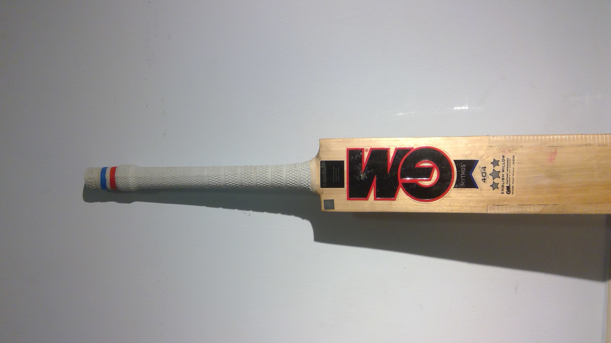
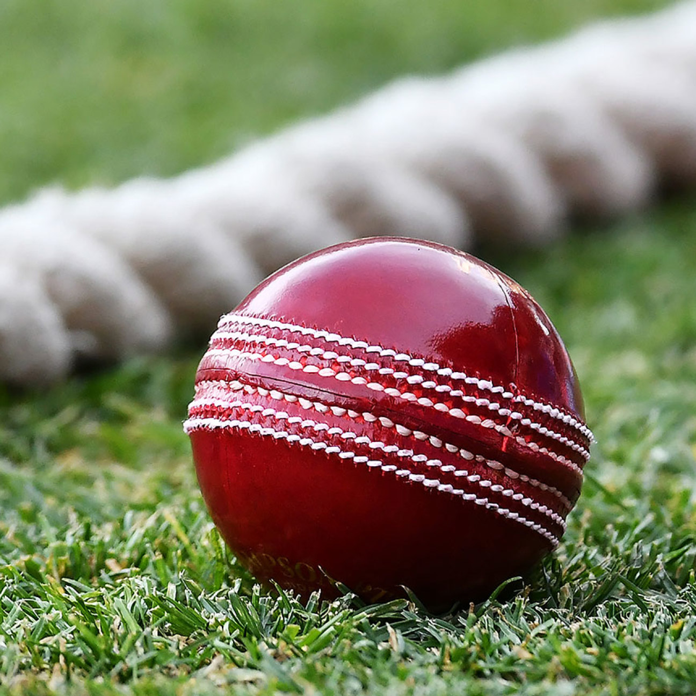

Overview
Cricket is the second most followed sport in the world, with an estimated 2.5 billion followers, across the globe.
The current strongest sides are:
There are three formats of the game, Test matches (which last 5 days), One Day Matches (50 overs), and T20 matches (20 overs)
Here is a video which gives an overview about what cricket is:
To learn more about the rules refer to this link or watch this video:

